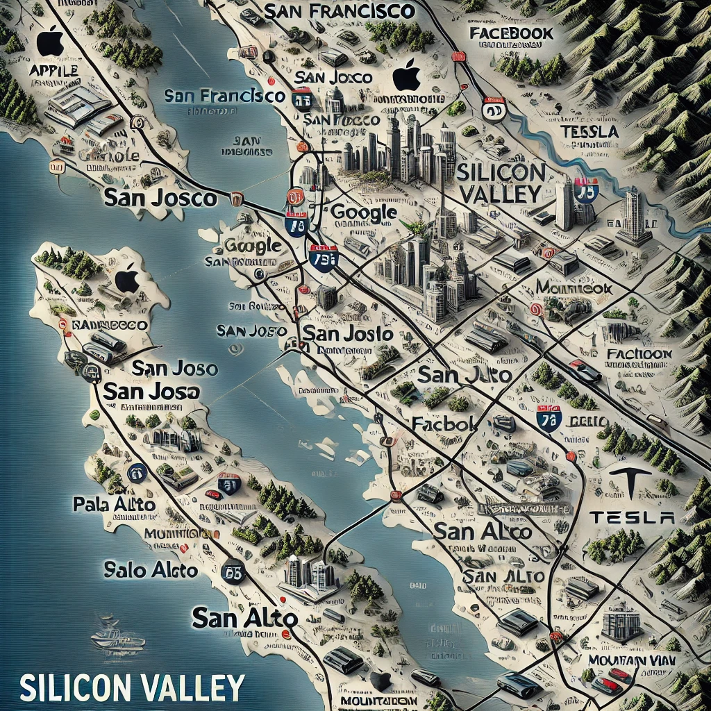
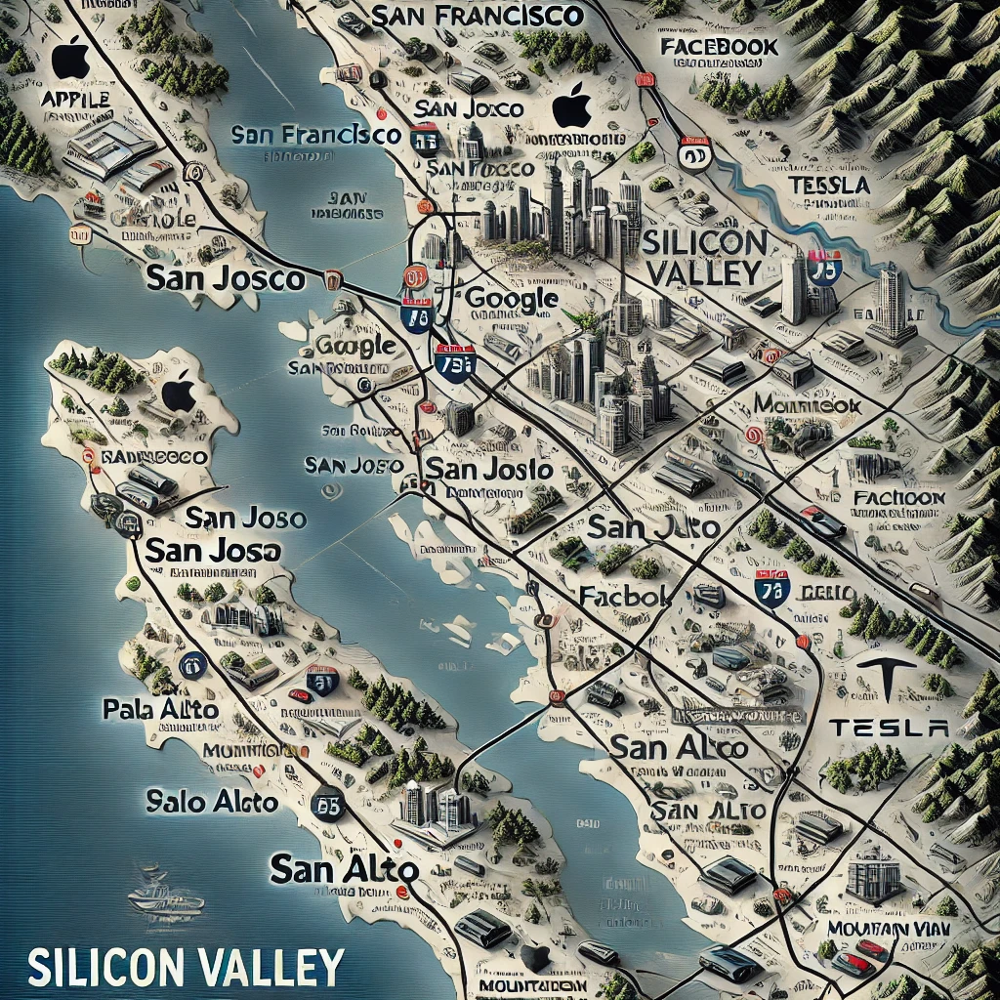

Nossa História
Fundada por João Silva e Maria Oliveira em 2005, a InovaTech começou suas atividades na cidade de São Paulo. A missão da empresa é proporcionar soluções tecnológicas inovadoras que impulsionem o sucesso dos nossos clientes. Nossa visão é ser líder em inovação tecnológica, reconhecida pela excelência em comunicação e atendimento ao cliente. Valorizamos a inovação, qualidade, integridade e foco no cliente.
No início, a InovaTech contava com apenas 10 colaboradores. Atualmente, a empresa emprega mais de 500 profissionais em diversas áreas. Desde sua fundação, a InovaTech expandiu suas operações para várias cidades do Brasil e conquistou uma sólida reputação no mercado de tecnologia.
 

Portfólio
A InovaTech oferece uma ampla gama de produtos e serviços tecnológicos, incluindo soluções de software empresarial, consultoria em inovação e suporte técnico especializado. Nossos diferenciais incluem atendimento personalizado e soluções sob medida para cada cliente. Nosso público-alvo são empresas de diversos setores que buscam inovação tecnológica e soluções personalizadas.
A comunicação empresarial
A comunicação empresarial na InovaTech é um elemento estratégico fundamental para garantir o bom funcionamento e a integração dos diversos setores da empresa. Com um fluxo comunicacional horizontal predominante, a empresa promove a troca de informações e ideias entre as equipes, enquanto o fluxo vertical ascendente e descendente assegura que as decisões e informações fluam eficazmente entre os níveis hierárquicos. Utilizando canais internos como e-mails corporativos, plataformas de comunicação interna e reuniões periódicas, e canais externos como redes sociais e newsletters, a InovaTech mantém uma comunicação robusta e eficaz. Apesar da sobrecarga de informações e da falta de integração entre alguns departamentos identificados, a empresa implementou um sistema de gestão de informações e uma equipe dedicada à comunicação interna para resolver esses problemas. A promoção de atividades de integração entre os departamentos também contribuiu para fortalecer a colaboração e a eficiência comunicacional da InovaTech.
Fale Conosco
Para entrar em contato conosco, utilize um dos nossos canais de comunicação:
- Email: contato@inovatech.com
- Telefone: (11) 1234-5678
- Redes Sociais:
Notícia
A importância da comunicação nas organizações é indiscutível. A InovaTech tem investido constantemente em melhorar seus processos de comunicação interna e externa para garantir que todas as partes interessadas estejam bem informadas e alinhadas com os objetivos da empresa. Com isso, a InovaTech tem alcançado resultados significativos em termos de eficiência e satisfação dos colaboradores e clientes.